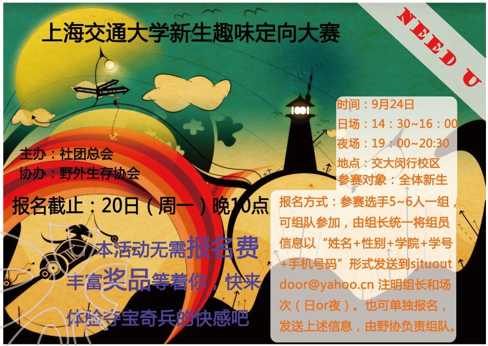

[转寄/推荐][转贴][删除][修改][设置可RE属性][上一篇][返回讨论区][下一篇][回文章][同主题列表][同主题阅读][从这里展开]
发信人: gxysina (小宇), 信区: outdoor
标 题: 上海交通大学新生趣味定向大赛开始报名了~~~
发信站: 饮水思源 (2010年09月17日07:38:58 星期五)
上海交通大学新生趣味定向大赛
活动简介：本次新生校园定向大赛将在上海交通大学闵行校区校园内设点30余处，参赛者
将从三个出发点出发，自行设计路线，按照地图寻找各个点，并在各个点完成相应的任务
，根据完成点的数量以及完成比赛的时间计成绩，每个场次取一等奖一名，二等奖两名，
三等奖三名。
活动特色：
1.比赛中你会不断发现新的地图，体验真实的夺宝奇兵式的交大发现之旅！
2.本次新生校园定向大赛将覆盖校园内很多标志性建筑，如新体，图书馆，上中下院，电
信群楼，庙门等，在这些地方会有各种丰富多彩，内容新鲜的任务或游戏等着你哦！
3.比赛中还将会有一些具有交大特色的问题等你来回答，看看你对交大的校园了解有多少
，比如说“你知道学生服务中心有多少台球桌吗？”，“你知道思源湖周围有多少长椅吗
？”，参加这次大赛，你会对交大的校园有更深的了解，相信你会越来越爱上交大的校园
的！
4.这次新生校园定向大赛将会有一些多人合作才能完成的点，在这个过程中相信将会培养
大家的团队合作精神，同是对同学们之间的感情也是一次很好的培养机会哦！想参加的男
同学一定要说服身边的女同学一起来参加哦！
活动海报
 screen.width - 200){this.width = screen.width - 200}">
|
[转寄/推荐][转贴][删除][修改][设置可RE属性][上一篇][返回讨论区][下一篇][回文章][同主题列表][同主题阅读][从这里展开]